What is Anime?
Originating from Japan, "Anime" is characterized by vibrant graphics and deeply human characters. Unlike episodic cartoons, it focuses on serialized storytelling where characters grow and change over time.
It explores themes often ignored by Western animation, such as philosophy, existentialism, and complex political intrigue.
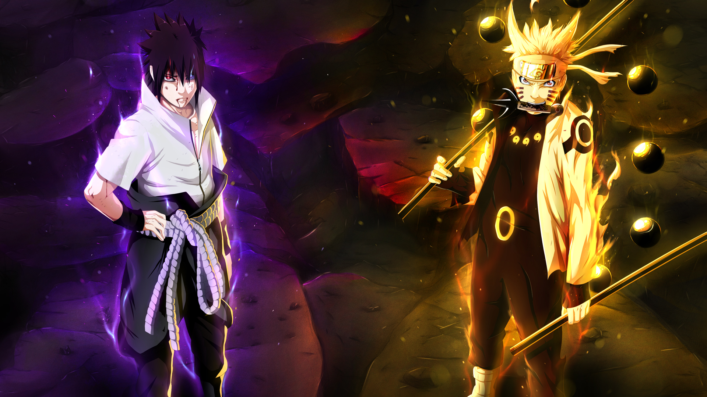
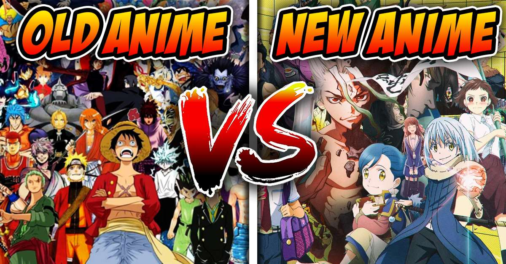
Where did it come from?
Anime’s DNA is a mix of traditional Japanese woodblock printing (Ukiyo-e) and early 20th-century Western film techniques. After WWII, pioneers like Osamu Tezuka (the "God of Manga") revolutionized the medium by using cinematic "camera angles" and large, expressive eyes to convey deep emotion.
It emerged not as a children's distraction, but as a way for a nation to rebuild its identity through storytelling.
Why does it matter?
Emotional Complexity
Unlike many western cartoons that reset every episode, anime characters suffer loss, age, and evolve. It matters because it mirrors the complexity of real life.
A Voice for Everyone
Whether you are into sports, high-finance, gourmet cooking, or space opera, there is an anime for it. It democratizes storytelling for every niche imaginable.
Cultural Bridge
It acts as a "soft power" tool, teaching the world about Japanese values—such as Ganbaru (hard work/perseverance)—while remaining universally relatable.
Anime Is Not Just Cartoons
It’s art. It’s emotion. It’s culture. Discover why anime has captured the hearts of millions.
Visual Artistry
While cartoons often use simplified designs for quick production, anime focuses on cinematic composition, detailed backgrounds, and expressive character designs that push the boundaries of digital art.
Mature Themes
Anime isn't afraid to tackle philosophy, grief, and politics. Unlike the "status quo" nature of many Western cartoons, anime characters undergo permanent growth and face real-world consequences.
Global Popularity
By blending Japanese cultural roots with universal human emotions, anime has transcended borders, creating a massive global community and a multi-billion dollar industry.
The Advantage
Choosing anime means choosing variety. From "Slice of Life" to high-concept Sci-Fi, there is a dedicated sub-genre for every possible interest and age group.
Anime on the World Stage
Several anime films have earned Academy Award nominations, highlighting anime’s artistic and storytelling excellence on a global stage.
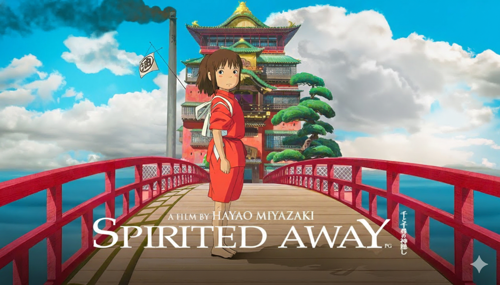
Spirited Away
The first non-English film to win Best Animated Feature, setting a global benchmark for anime storytelling.
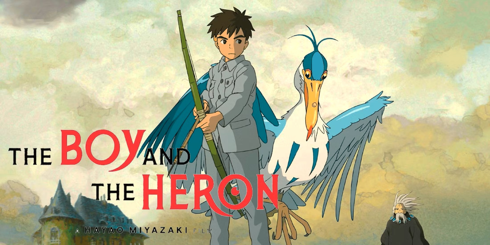
The Boy and the Heron
A historic second win for Hayao Miyazaki at the 96th Academy Awards, proving the timeless power of his vision.
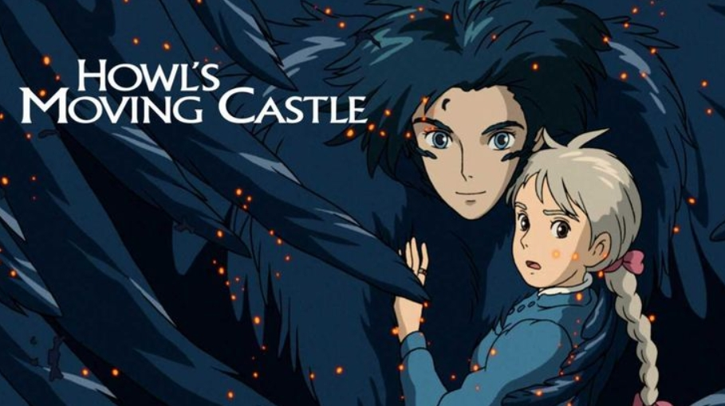
Howl’s Moving Castle
A breathtaking steampunk fantasy that enchanted global critics and earned a historic nomination.
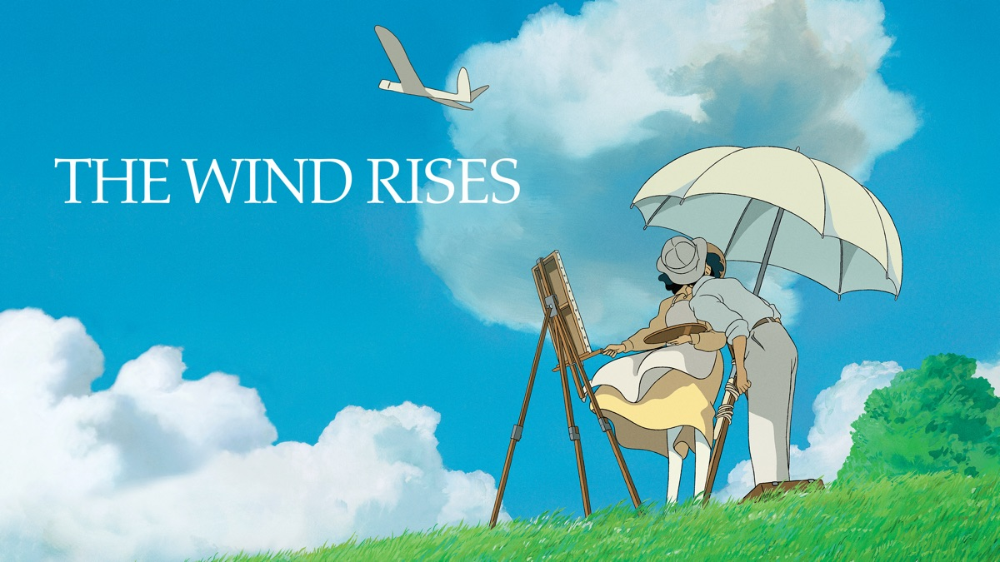
The Wind Rises
Miyazaki's lyrical tribute to flight and dreams, recognized for its mature and poetic narrative.
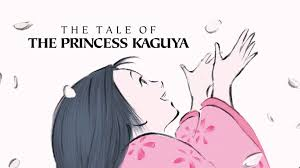
Princess Kaguya
Celebrated for its unique hand-drawn watercolor aesthetic that pushed the boundaries of modern animation.
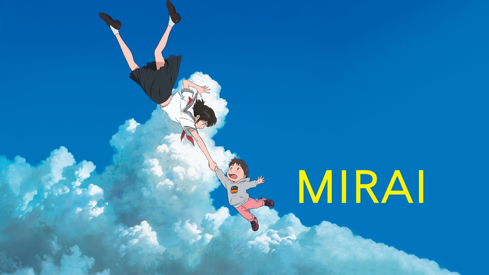
Mirai
A contemporary family story that proved modern studios outside of Ghibli can compete on the world stage.

A Cultural Phenomenon
From fashion to cinema, anime influences everything. It has moved from a niche hobby to a global powerhouse that shapes modern pop culture.
- Voice Acting: Known as Seiyuu, they are the heart of the emotion.
- Music: Orchestral scores that rival Hollywood films.
- Tourism: Anime "Pilgrimages" bring millions to Japan.
The Essential Entry List
New to the medium? These five masterpieces are the perfect gateway into the world of anime.
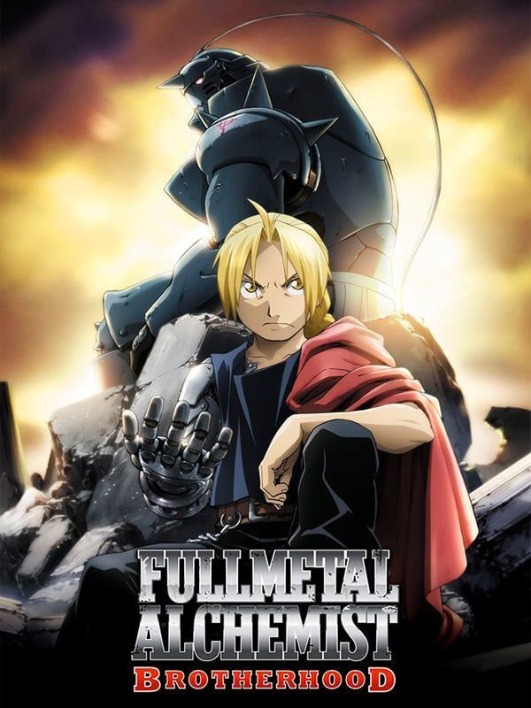
Fullmetal Alchemist: B
A perfect blend of action, philosophy, and brotherhood. It is widely considered the best "all-rounder" anime ever made.
Action / Adventure
Your Name (Kimi no Na wa)
A breathtaking film about fate and connection. It showcases the absolute peak of modern digital animation.
Romance / Supernatural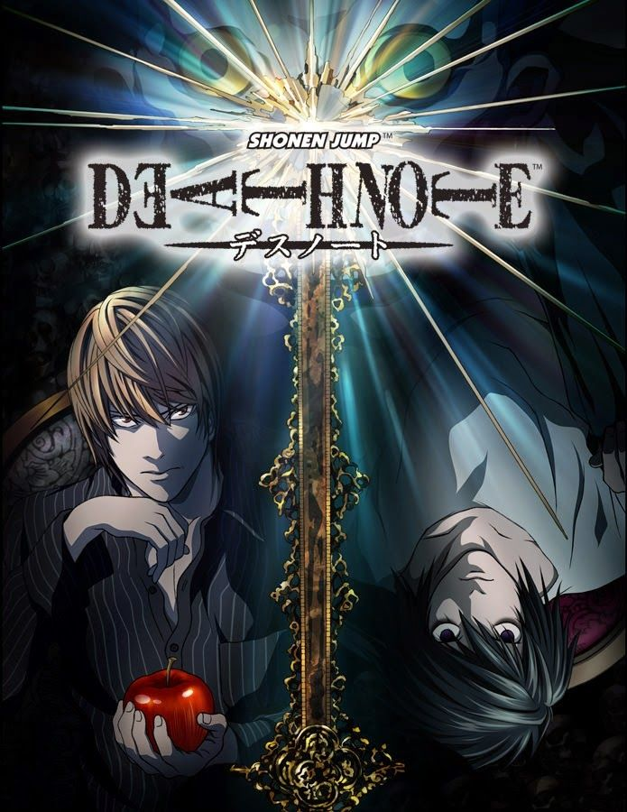
Death Note
A high-stakes game of cat and mouse. This is the ultimate proof that anime can be a dark, intellectual psychological thriller.
Mystery / Psychological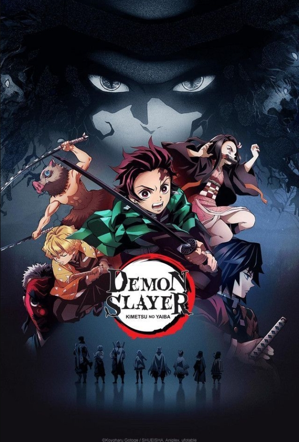
Demon Slayer
Famous for its "Ufotable" animation style. It represents the modern era of high-budget, cinematic combat sequences.
Action / Historical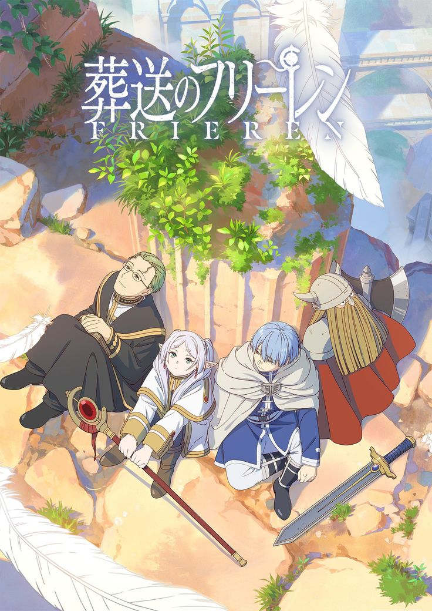
Frieren: Beyond Journey's End
A poetic story about the passage of time and the beauty of human connections. It redefined the fantasy genre in 2024.
Fantasy / Slice of LifeThe Ultimate Genre Guide
Master the terms and find your next favorite series.
Action
High-energy combat and thrilling sequences.
Adventure
Epic journeys and exploration of unknown lands.
Comedy
Pure humor and funny situations.
Drama
Emotional stories focused on human struggle.
Fantasy
Imaginary worlds fueled by magic and wonder.
Food
The art of cooking and culinary delight.
Harem
One protagonist with multiple love interests.
Historical
Set in the past, often Ancient Japan or Europe.
Horror
Dread, suspense, and terrifying imagery.
Isekai
Transported to another world or trapped in a game.
Magic
Focuses on spellcasting and mystical abilities.
Mecha
Sci-fi featuring giant robots and military tech.
Music
Centered around bands and performing arts.
Mystery
Solving riddles, crimes, and hidden secrets.
Parody
Satire that pokes fun at other shows.
Psychological
Deep thinking and mental games.
Reincarnation
Being reborn back into the same world.
Revenge
Dark tales of settling old scores.
Romance
Intense emotional bonds and love stories.
School
Set in academic life, often mixed with Action or Romance.
Shonen
Target: Young males. Themes: Action and growth.
Shoujo
Target: Young females. Themes: Romance and identity.
Sports
Competition, teamwork, and athletic mastery.
Supernatural
Beyond human nature—spirits and unique powers.
Survival
Struggling to stay alive in apocalyptic settings.
Tensei
Reincarnation after death into a new world.
Tragedy
Heartbreaking events and disastrous consequences.